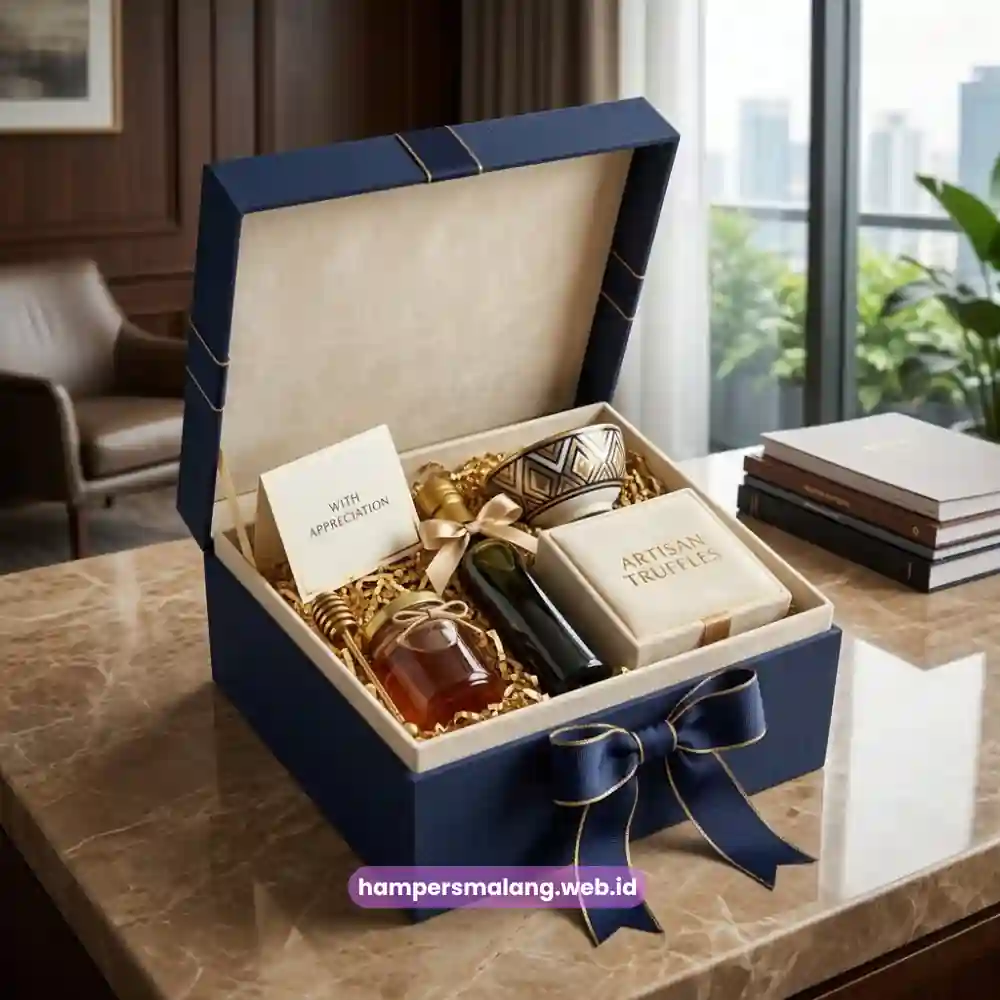
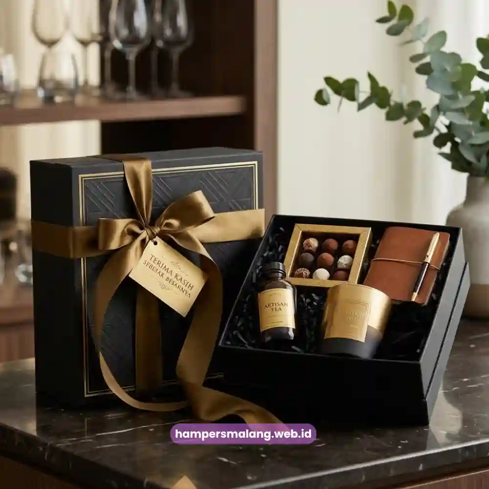

Mengapa packaging hampers klien memengaruhi persepsi branding perusahaan? Sebab kemasan adalah elemen visual pertama yang dilihat klien sebelum mengetahui isi hampers, sehingga desain dan kualitasnya secara langsung mencerminkan standar profesionalisme perusahaan pengirim.
Packaging yang dirancang dengan baik mampu menyampaikan pesan branding tanpa harus mengucapkan sepatah kata pun.
Dalam dunia corporate gifting, banyak perusahaan cenderung berfokus pada isi hampers dan mengesampingkan aspek kemasan.
Padahal, kemasan yang kurang diperhatikan dapat menurunkan nilai keseluruhan hampers, sekalipun isi di dalamnya berkualitas tinggi.
Sebaliknya, packaging yang dirancang secara strategis mampu meningkatkan persepsi nilai hampers secara signifikan di mata klien penerima.
Bagaimana Packaging Menjadi Representasi Identitas Perusahaan?
Packaging berfungsi sebagai medium visual yang menyampaikan identitas merek melalui elemen seperti warna, tipografi, dan material kemasan yang digunakan.
Ketika elemen-elemen tersebut konsisten dengan identitas visual perusahaan, klien akan lebih mudah mengasosiasikan hampers tersebut dengan citra profesional yang ingin dibangun.
Konsistensi visual ini penting terutama bagi perusahaan yang secara rutin mengirimkan hampers kepada banyak klien, karena packaging yang seragam dan terstandarisasi akan memperkuat pengenalan merek dari waktu ke waktu.
Klien yang menerima hampers dengan desain khas akan lebih mudah mengingat perusahaan pengirim di antara banyak hadiah bisnis lain yang mereka terima.
Elemen Apa Saja yang Membentuk Packaging Hampers Berkelas?
Packaging hampers berkelas umumnya dibentuk oleh kombinasi material box berkualitas, pemilihan warna yang selaras dengan identitas merek, serta detail tambahan seperti pita, stiker logo, atau label khusus yang memperkuat kesan eksklusif.
Material yang kokoh dan tidak mudah rusak selama pengiriman juga menjadi pertimbangan penting agar hampers sampai dalam kondisi sempurna.
Selain material dan warna, tata letak penyusunan produk di dalam box turut memengaruhi kesan visual saat hampers dibuka.
Penyusunan yang rapi dan proporsional akan menciptakan pengalaman unboxing yang lebih memuaskan, sehingga kesan pertama yang tercipta semakin kuat di benak klien penerima.
Baca Juga: Momen Terbaik Kirim Hampers Terima Kasih untuk Klien Bisnis
Mengapa Kartu Ucapan Personal Penting dalam Packaging Hampers?
Kartu ucapan personal berfungsi sebagai sentuhan akhir yang mengubah hampers dari sekadar produk menjadi bentuk komunikasi yang bermakna.
Pesan yang ditulis secara spesifik, menyebutkan nama klien atau konteks kerja sama tertentu, akan memberikan kesan bahwa hampers tersebut benar-benar dirancang khusus, bukan sekadar produk massal yang dikirim tanpa personalisasi.
Sebuah kajian mengenai perilaku penerima hadiah bisnis pada 2022 menunjukkan bahwa mayoritas profesional lebih menghargai hadiah yang disertai pesan personal dibandingkan hadiah dengan nilai lebih tinggi namun tanpa sentuhan personal sama sekali.
Temuan ini menegaskan bahwa detail kecil seperti kartu ucapan memiliki dampak besar terhadap persepsi keseluruhan hampers.

Bagaimana Warna dan Tipografi Kemasan Memengaruhi Kesan Klien?
Warna kemasan memiliki asosiasi psikologis yang dapat memengaruhi bagaimana klien mempersepsikan hampers tersebut.
Warna emas dan hitam misalnya, umumnya diasosiasikan dengan kemewahan dan eksklusivitas, sementara warna pastel cenderung menciptakan kesan lembut dan hangat yang cocok untuk momen perayaan tertentu.
Tipografi yang digunakan pada label atau kartu ucapan juga sebaiknya konsisten dengan gaya visual merek perusahaan.
Penggunaan font yang terlalu ramai atau tidak sesuai dengan karakter merek dapat mengurangi kesan profesional yang ingin ditampilkan melalui hampers tersebut.
Apakah Logo Perusahaan Perlu Ditampilkan pada Packaging Hampers?
Penambahan logo perusahaan pada packaging hampers dapat memperkuat brand recall, namun perlu diterapkan secara proporsional agar tidak terkesan terlalu promosional.
Penempatan logo yang halus, misalnya pada stiker kecil atau label pita, umumnya lebih diterima dibandingkan logo berukuran besar yang mendominasi seluruh permukaan kemasan.
Pendekatan yang seimbang antara branding dan estetika akan membuat hampers tetap terasa sebagai bentuk apresiasi tulus, bukan semata media promosi terselubung yang dapat mengurangi kesan ketulusan dari hampers tersebut.
Merancang packaging hampers yang tepat membutuhkan pemahaman mendalam mengenai karakter merek sekaligus preferensi visual klien yang dituju.
Hampers Malang menyediakan layanan personalisasi packaging hampers korporat, mulai dari pemilihan material, warna, hingga penambahan elemen branding yang disesuaikan dengan identitas perusahaan Anda.
Sehingga setiap hampers yang dikirim mampu meninggalkan kesan profesional yang konsisten.
Packaging bukan sekadar pembungkus, melainkan bagian integral dari strategi branding dalam setiap hampers ucapan terima kasih untuk klien.
Material berkualitas, warna yang konsisten dengan identitas merek, serta sentuhan personal seperti kartu ucapan akan menentukan seberapa kuat kesan profesional yang tertinggal di benak klien.
Tanya Jawab Seputar Packaging Hampers
Kualitas packaging dapat memengaruhi biaya, namun peningkatan tersebut umumnya sebanding dengan nilai kesan profesional yang dihasilkan bagi penerima.
Boleh, selama kombinasi warna tetap konsisten dengan identitas visual perusahaan dan tidak mengurangi kesan elegan dari kemasan secara keseluruhan.
Tidak wajib, namun pesan yang terasa personal, baik ditulis tangan maupun dicetak dengan format khusus, tetap memberikan dampak positif terhadap penerima.

Butuh Hampers Klien Eksklusif?
Dapatkan Penawaran Terbaik untuk Hampers Perusahaan Anda.
Ditulis oleh Tim Maroon Souvenir
Ahli dalam perancangan hampers dan corporate gift untuk perusahaan. Membantu klien memberikan kesan mendalam melalui hadiah berkualitas.